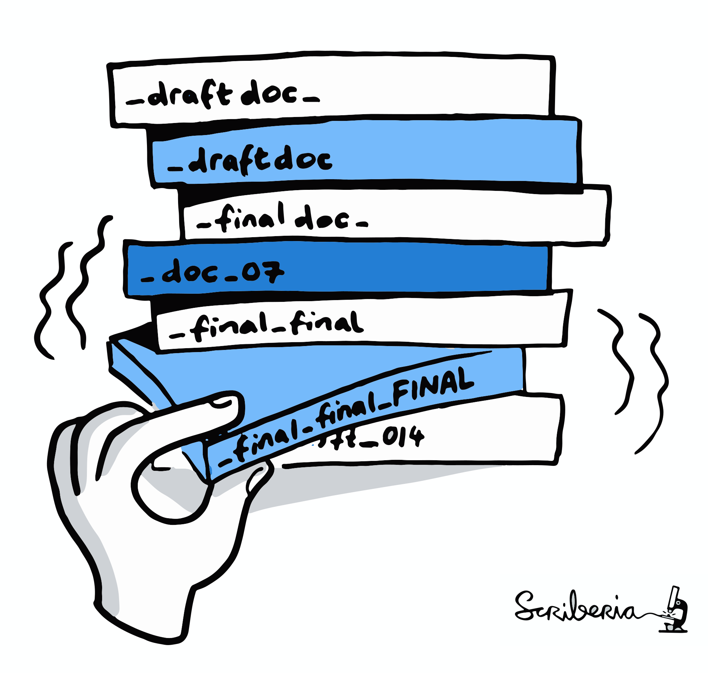
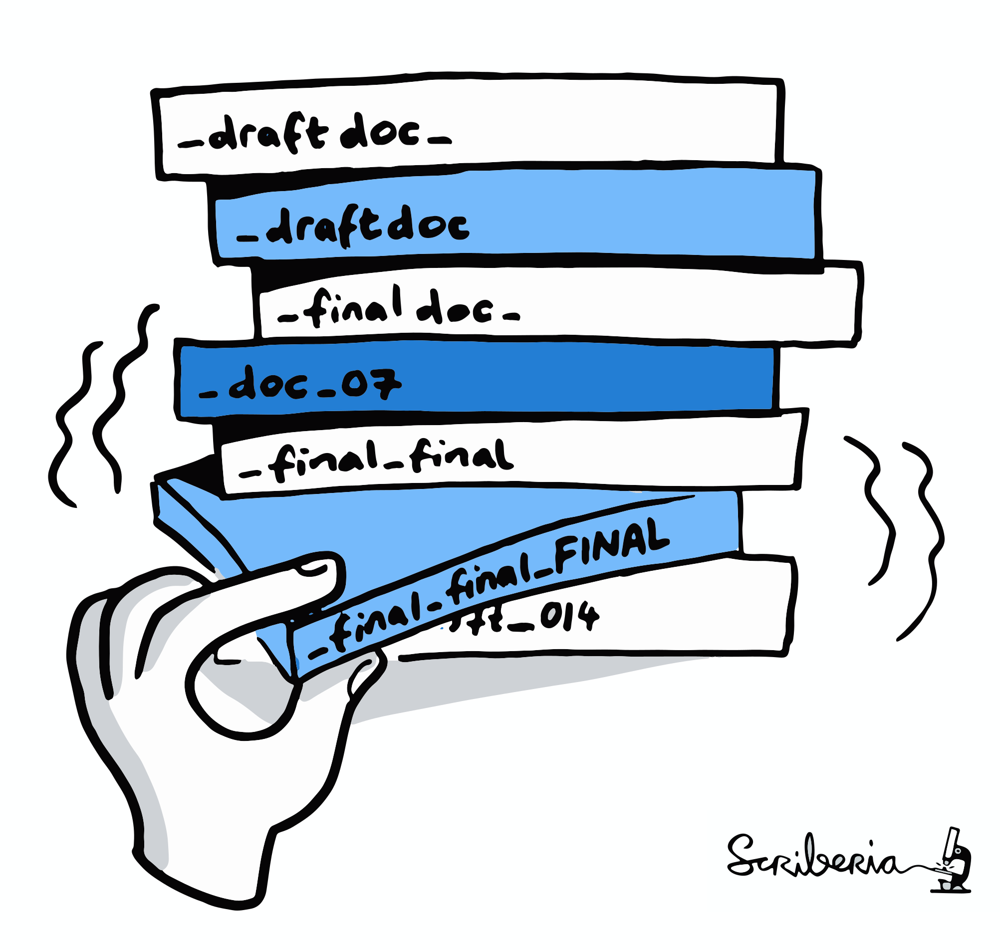

reproducibility management in neuroscience
🧠💻
Specific issues - and solutions
Adina Wagner
 @AdinaKrik
@AdinaKrik |
|
|
Psychoinformatics lab,
Institute of Neuroscience and Medicine, Brain & Behavior (INM-7) Research Center Jülich |


|
Slides: TODO ZENODO/FIGSHARE
Here's a recent paper that I wrote
Here's how I do a data analysis
The vision
An article about computational science in a scientific publication is not the scholarship itself, it is merely advertising of the scholarship. The actual scholarship is the complete software development environment and the complete set of instructions which generated the figures.
Jon Claerbout (paraphrased)

The vision
An article about computational science in a scientific publication is not the scholarship itself, it is merely advertising of the scholarship. The actual scholarship is the complete software development environment and the complete set of instructions which generated the figures.
Jon Claerbout (paraphrased)
Specific issues: Data
- Neuroscientists acquire interesting data, but it has its peculiarities:
- Depending on acquisition hardware and analysis software, some data are in proprietary formats (e.g., Neuromag, brain voyager, brain vision)
- Depending on field, data can be sizeable (e.g., (f)MRI, CT, EEG, PET, MEG)
- Heterogenous data from complex acquisitions with multiple data channels and modalities
- Datasets are getting bigger and bigger ( Bzdok & Yeo, 2017), e.g. multi-modal imaging, behavioral + genetics data in HCP (humanconnectome.org) or UKBiobank (ukbiobank.ac.uk/)
- Some data fall under General Data Protection Regulation (GDPR)
This makes data harder to access, structure, and share
Specific issues: Complex analyses

- Much of neuroscientific research is computationally intensive, with complex workflows from raw data to result, and plenty of researchers degrees of freedom
Specific issues: Complex analyses
-
The analytic flexibility leads to sizable variations in conclusion.
- NARPS Study,
Botvinik-Nezer et al., 2020
|
|
70 independent research groups, investigating 9 hypothesis, on the same data: Consistent conclusions for four hypothesis |
|
The variety of methodological & analytical choices is not the enemy to computational reproducibility, the challenge lies in encoding those degrees of freedom in a standardized, ideally machine-readable way Gilmore et al., 2017 |
|
Specific issues: Complex analysis
- The building blocks of a scientific result are rarely static
| Analysis code evolves (Fix bugs, add functions, refactor, ...) |

|
Specific issues: Complex analysis
- The building blocks of a scientific result are rarely static
| Data changes (errors are fixed, data is extended, naming standards change, ...) |

|
Specific issues: Complex analyses
"Shit, which version of which script produced these outputs from which version of what data?"
 

The pipeline needs to become transparent

|
Digital Provenance = A complete description of how a digital file came to be (FAIR principles) |
The pipeline needs to become automated

|
computational reproducibility |
Specific issues: Complex tools
Specific issues: Complex tools
- Software is a part of the digital provenance of your work: Some analysis will only work in the desired way (or at all) in specific versions of a software
- But it goes beyond "one software": Modern data analysis software has an incredibly complex dependency stack
- Example Scikit-learn Direct dependencies: 38 packages, 153 dependency relations. Recursive dependencies: 485 packages, 10715 dependency relations
Specific issues: Complex tools
- R base core (direct dependencies only)
Specific issues: Complex tools
- JASP (direct dependencies only)
Everything matters
Everything matters
"Works on my machine"

"This used to work on my machine..."

Most of us are no computer scientists
Common issues in (Neuro?)science

Towards computationally reproducible science
- Computationally reproducible science
- Open sharing of code, data, and software environment, in precise versions
- automatically computationally reproducible science
- Sufficient, ideally machine-readable, digital provenance that allows humans and machines to extract what has been done, re-do it, and verify the result
Which solutions exist in neuroscience?
Large & growing ecosystem of Open Source software & data formats


... and many more!
|
Adoption and adaptation of existing solutions
-
The neurosciences are a contributor and beneficiary of open software
tools and standards

|
|
Adoption and adaptation of existing solutions
-
The neurosciences are a contributor and beneficiary of open software
tools and standards


|
|
Adoption and adaptation of existing solutions
-
The neurosciences are a contributor and beneficiary of open software
tools and standards
|
|
|
Research data management
-
Large, complex data sets and analysis require good research data
management from the very start.
Just like Research Data Management can't be an afterthought, reproducibility shouldn't be an afterthought ("Reproducible by Design" Kennedy et al., 2019)
- National (e.g., NFDI4Neuro) and international initiatives (e.g., INCF) for improving RDM in neuroscience and providing tools and infrastructure for interoperable analysis and data sharing
- Scientific and commercial (but often free) infrastructure for sharing code, data, and software: OpenNeuro, zenodo.org, Software heritage, GitHub/GitLab/G-Node Gin/Bitbucket, The Open Science Framework, ...
- Work enabling safe, open data sharing of private data (e.g., Open Brain Consent)
Link all research components
|
|
Link code, data, software and transparently to your result, published paper, or derived data |
DataLad (Hanke, Halchenko et al.)
- Domain-agnostic data management & data publication tool, build on top of Git and Git-annex (Joey Hess)
- Main features:
- version-controlling and linking arbitrarily large digital objects (data, software, code, results),
- transport mechanisms for sharing, obtaining & collaborating on data (analysis) using existing infrastructure without a central service
- Machine-readable, re-executable provenance

Brainhacks, Hackathons, and Traintracks
-
Even the greatest tool will die if no one knows about it or
can use it, and no one's life is easier if you have to learn everything
by yourself from scratch, with no support.
- Especially ECRs are extremely open towards new tools and motivated to improve their science (Poldrack, 2019)
- Brainhack: Interdisciplinary conference format with educational sessions & components from hackathons & unconferences (Craddock et al., 2016)
- Examples: OHBM Brainhack, Brainhack Global, Neurohackademy, SIPS
Inclusive, collaborative, educational space


Communities and organizations
- Neurostars.org
- "Stackoverflow for Neuroscience"
- The Turing Way
- An open-source community-guide to reproducible, ethical, inclusive and collaborative data science
- INCF
- A standards organization for open and FAIR neuroscience
- ReproNim
- Center for Reproducible Neuroimaging Computation
- ...
So where are we at?
- Computational reproducibility makes your life easier, and your science more open, transparent, and accessible, and thus also more impactful
- Computational reproducibility is not an afterthought, and everything matters - code, software, data, computational environment, all in precise version
Acknowledgements
|

|
Thanks for your attention
|
Women neuroscientists are underrepresented in neuroscience. You can use the Repository for Women in Neuroscience to find and recommend neuroscientists for conferences, symposia or collaborations, and help making neuroscience more open & divers. |